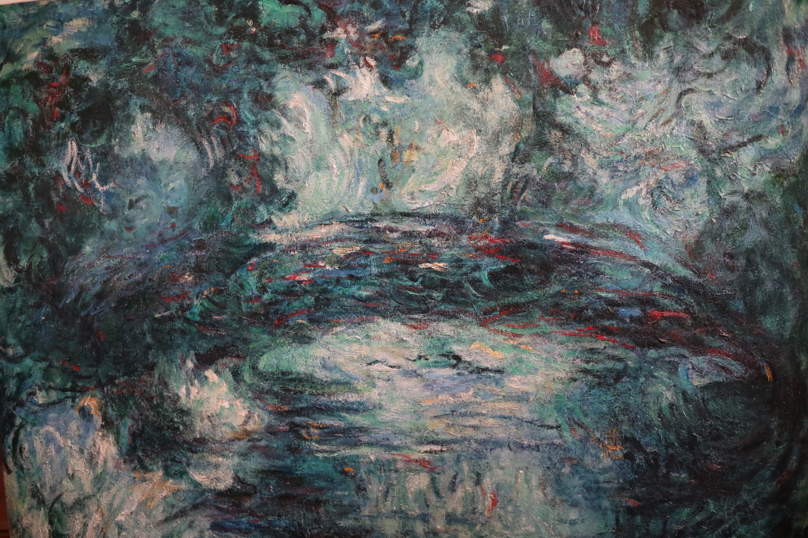

Le World Wide Web [ˌwɝld waɪd ˈwɛb]a (littéralement la « toile (d’araignée) mondiale », abrégé www ou le Web), la toile mondiale ou la toile1, est un système hypertexte public fonctionnant sur Internet. Le Web permet de consulter, avec un navigateur, des pages accessibles sur des sites. L’image de la toile d’araignée vient des hyperliens qui lient les pages web entre ellesb. Le Web n’est qu’une des applications d’Internet2, distincte d’autres applications comme le courrier électronique, la messagerie instantanée et le partage de fichiers en pair à pair. Inventé en 1989-1990 par Tim Berners-Lee suivi de Robert Cailliau, c'est le Web qui a rendu les médias grand public attentifs à Internet. Depuis, le Web est fréquemment confondu avec Internet3 ; en particulier, le mot Toile est souvent utilisé dans les textes non techniques sans qu'il soit clair si l'auteur désigne le Web ou Internet.
